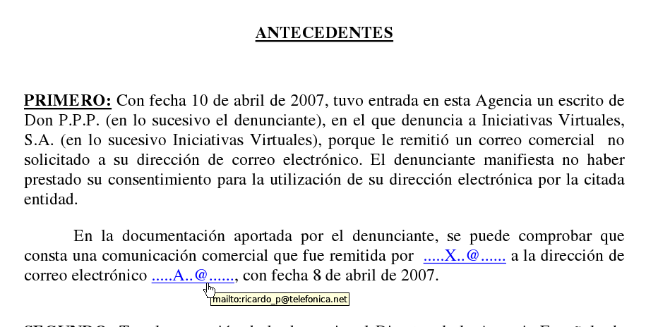

Leyendo una resolución de la AEPD me doy cuenta de que parece que alguien está teniendo serios problemas con los autoenlaces de Microsoft Word.
No deja de ser irónico que una sanción de la Agencia Española de Protección de Datos por incumplimiento de la legislación en materia de protección de datos personales, incumpla presuntamente la misma legislación.
¿Veremos próximamente la primera y recursiva autosanción de la historia?